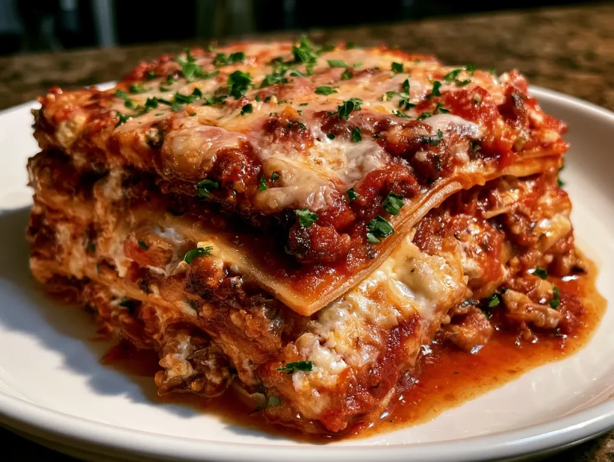

A truly delicious mouthwatering italian classic!
The layers of tender pasta,rich tomato,sauce,savory meat and melted cheese beautifully stacked
The layers of tender pasta,rich tomato,sauce,savory meat and melted cheese beautifully stacked

DESCRIPTION
Lasagna is a classic Italian-inspired dish made with layers of pasta, rich tomato and meat sauce, creamy cheese, and melted mozzarella. It is a hearty and comforting meal that is perfect for sharing with family and friends.
This homemade lasagna combines simple ingredients to create a delicious meal with a cheesy, golden-brown top and flavorful layers underneath.
INGREDIENTS
- Lasagna noodles:12-15 sheets
- Ground beef or Italian sausage:1 Ib
- Ricotta cheese:1 1/2 cups
- Mozzarella cheese:2 cups shredded
- Parmesan cheese:1/2 cup grated
- Tomato sauce:4 cups
- Onion:1 medium finely chopped
- Garlic:3 cloves, minced
- Italian seasoning:1 teaspoon
- Salt and black pepper:to taste
- Olive oil:2 tablespoons
- Egg:1 large (mixed with ricotta to help it set)
STEPS
- Prepare the meat sauce (20 minutes):
Heat 2 tablespoons of olive oil in a large skillet over medium heat. Add the chopped onion and sauté until translucent, about 4 minutes. Add the garlic and cook for another minute until fragrant. Stir in the ground beef or sausage, breaking it up with a spoon. Cook until browned and no longer pink, about 7-8 minutes. Drain any excess fat if needed. Pour in the tomato sauce, sprinkle the Italian seasoning, salt, and pepper, then simmer gently for 10 minutes. The sauce should thicken slightly and smell rich with herbs.
Tip: Avoid rushing this step; a well-developed sauce is key to flavor depth.
- Mix the ricotta filling (5 minutes):
In a bowl, combine ricotta cheese, one beaten egg, half of the grated Parmesan, and a pinch of salt and pepper. Stir until smooth. The egg acts as a binder, giving the filling a creamy, sliceable texture after baking.
- Cook the noodles (if using regular noodles) (10 minutes):
Boil the lasagna noodles in salted water according to package instructions until al dente. Drain carefully and lay flat on a clean kitchen towel to prevent sticking.
- Assemble the lasagna (10 minutes);
Spread a thin layer of meat sauce on the bottom of a 9×13-inch baking dish. Add a layer of noodles to cover the sauce. Dollop half the ricotta mixture evenly over the noodles, then sprinkle one-third of the mozzarella. Repeat layers: sauce, noodles, ricotta, mozzarella. Finish with a top layer of noodles, sauce, the remaining mozzarella, and Parmesan cheese.
Visual cue: The lasagna should look evenly layered, with cheese visibly dotted through the top.
- Bake the lasagna (45 minutes):
Cover the dish tightly with foil (to avoid sticking, spray the foil lightly with cooking spray) and bake at 375°F (190°C) for 35 minutes. Remove the foil and bake for another 10 minutes or until the cheese on top is golden and bubbly.
- Rest before serving (10-15 minutes):
Lasagna needs to set before slicing. Allow it to cool slightly; this resting time helps the layers stay intact and makes serving easier.